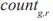
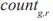
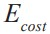
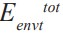

For this purpose, we selected Pareto solutions across all different K values that have fewer than 10 features including lymph node information, and formed three clusters using these selected features, disregarding the evolved value of K. The survival characteristics of the three prognostic groups found by the best of these solutions were very competitive with our chosen solution. The good prognostic group was welldifferentiated from the intermediate group (p < 0.10), and the difference between the intermediate group and the poor group was significant (p < 0.026). This suggests that lymph node status may indeed have strong prognostic effects, even though it is excluded from the best models evolved by our algorithms.
Conclusions
In this section, we presented a new ELSA/EM algorithm for unsupervised feature selection. Our ELSA/EM model outperforms a greedy algorithm in terms of classification accuracy while considering a number of possibly conflicting heuristic metrics. Most importantly, our model can reliably select an appropriate clustering model, including significant features and the number of clusters.
In future work, we would like to compare the performance of ELSA on the unsupervised feature selection task with other multi-objective EAs, using each in conjunction with clustering algorithms. Another promising future direction will be a direct comparison of different clustering algorithms in terms of the composition of selected features and prediction accuracy.
FEATURE SELECTION FOR ENSEMBLES
In this section, we propose a new meta-ensembles algorithm to directly optimize ensembles by creating a two-level evolutionary environment. In particular, we employ feature selection not only to increase the prediction accuracy of an individual classifier, but also to promote diversity among component classifiers in an ensemble (Opitz, 1999).
Feature Selection and Ensembles
Recently, many researchers have combined the predictions of multiple classifiers to produce a better classifier, an ensemble, and often have reported improved performance (Bauer & Kohavi, 1999;Breiman, 1996b). Bagging (Breiman, 1996a) and Boosting (Freund & Schapire, 1996) are the most popular methods for creating accurate ensembles. The effectiveness of Bagging and Boosting comes primarily from the diversity caused by resampling training examples while using the complete set of features to train component classifiers.
Recently, several attempts have been made to incorporate the diversity in feature dimension into ensemble methods. The Random Subspace Method (RSM) in Ho (1998a & 1998b) was one early algorithm that constructed an ensemble by varying the feature subset. RSM used C4.5 as a base classifier and randomly chose half of the original features to build each classifier. In Guerra-Salcedo and Whitley(1999), four different ensemble methods were paired with each of three different feature selection algorithms: complete, random, and genetic search. Using two table-based classification methods, ensembles constructed using features selected by the GA showed the best performance. In Cunningham and Carney (2000), a new entropy measure of the outputs of the component classifiers was used to explicitly measure the ensemble diversity and to produce good feature subsets for ensemble using hill-climbing search.
Genetic Ensemble Feature Selection (GEFS) (Opitz, 1999) used a GA to search for possible feature subsets. GEFS starts with an initial population of classifiers built using upto 2D features, where D is the complete feature dimension. It is possible for some features to be selected more than once in GEFS, and crossover and mutation operators are used to search for new feature subsets. Using 100 most-fit members with majority voting scheme, GEFS reported better estimated generalization than Bagging and AdaBoost on about two-thirds of 21 data sets tested. Longer chromosomes, however, make GEFS computationally expensive in terms of memory usage (Guerra-Salcedo & Whitley, 1999). Further, GEFS evaluates each classifier after combining two objectives in a subjective manner using fitness = accuracy + λ diversity, where diversity is the average difference between the prediction of component classifiers and the ensemble.
However, all these methods consider only one ensemble. We propose a new algorithm for ensemble feature selection, Meta-Evolutionary Ensembles (MEE), that considers multiple ensembles simultaneously and allows each component classifier to move into the best-fit ensemble. We evaluate and reward each classifier based on two different criteria, accuracy and diversity. A classifier that correctly predicts data examples that other classifiers in the same ensemble misclassify contributes more to the accuracy of the ensemble to which it belongs. We imagine that some limited “energy” is evenly distributed among the examples in the data set. Each classifier is rewarded with some portion of the energy if it correctly predicts an example. The more classifiers that correctly classify a specific example, the less energy is rewarded to each, encouraging them to correctly predict the more difficult examples. The predictive accuracy of each ensemble determines the total amount of energy to be replenished at each generation. Finally, we select the ensemble with the highest accuracy as our final model.
Meta-Evolutionary Ensembles
Pseudocode for the Meta-Evolutionary Ensembles (MEE) algorithm is shown in Figure 10, and a graphical depiction of the energy allocation scheme is shown in Figure11.
Each agent (candidate solution) in the population is first initialized with randomly selected features, a random ensemble assignment, and an initial reservoir of energy. The representation of an agent consists of D + log2(G) bits. D bits correspond to the selected features (1 if a feature is selected, 0 otherwise). The remaining bits are a binary representation of the ensemble index, where G is the maximum number of ensembles. Mutation and crossover operators are used to explore the search space and are defined in the same way as in previous section.
In each iteration of the algorithm, an agent explores a candidate solution (classifier) similar to itself, obtained via crossover and mutation. The agent’s bit string is parsed to get a feature subset J. An ANN is then trained on the projection of the data set onto J, and returns
Figure 10: Pseudo-code of Meta-Evolutionary Ensembles (MEE) algorithm.
Figure 11: Graphical depiction of energy allocation in the MEE. Individual classifiers (small boxes in the environment) receive energy by correctly classifying test points. Energy for each ensemble is replenished between generations based on the accuracy of the ensemble. Ensembles with higher accuracy have their energy bins replenished with more energy per classifier, as indicated by the varying widths of the bins.
the predicted class labels for the test examples. The agent collects ∆E from each example it correctly classifies, and is taxed once with Ecost. The net energy intake of an agent is determined by its classification accuracy. But the energy also depends on the state of the environment.We have an energy source for each ensemble, divided into bins corresponding to each data point. For ensemble g and record index r in the test data, the environment keeps track of energy and the number of agents in ensemble that correctly predict record r. The
and the number of agents in ensemble that correctly predict record r. The
energy received by an agent for each correctly classified record r is given by
An agent receives greater reward for correctly predicting an example that most in its ensemble get wrong. The min function ensures that for a given point there is enough energy to reward at least five agents in the new generation. Candidate solutions receive energy only inasmuch as the environment has sufficient resources; if these are depleted, no benefits are available until the environmental resources are replenished. Thus, an agent is rewarded with energy for its high fitness values, but also has an interest in finding unpopulated niches, where more energy is available. The result is a natural bias toward diverse solutions in the population.for any action is a constant ( < θ).
In the selection part of the algorithm, an agent compares its current energy level witha constant reproduction threshold θ. If its energy is higher than θ, the agent reproduces; the agent and its mutated clone become part of the new population, with the offspring receiving half of its parent’s energy. If the energy level of an agent is positive but lower than θ, only that agent joins the new population.
The environment for each ensemble is replenished with energy based on its predictive accuracy, as determined by majority voting with equal weight among base classifiers. We sort the ensembles in ascending order of estimated accuracy and apportion energy in linear proportion to that accuracy, so that the most accurate ensemble is replenished with the greatest amount of energy per base classifier. Since the total amount of energy replenished also depends on the number of agents in each ensemble, it is possible that an ensemble with lower accuracy can be replenished with more energy in total than an ensemble with higher accuracy.
Experimental Results
Experimental results of MEE/ANN
We tested the performance of MEE combined with neural networks on several data sets that were used in Opitz(1999). In our experiments, the weights and biases of the neural networks are initialized randomly between 0.5 and -0.5, and the number of hidden nodes is determined heuristically as the square root of inputs. The other parameters for the neural networks include a learning rate of 0.1 and a momentum rate of 0.9. The number of training epochs was kept small for computational reasons. The values for the various parameters are: Pr(mutation) = 1.0, Pr(crossover) = 0.8, = 0.2, q = 0.3, and T = 30. The value of  = 30 is chosen to maintain a population size around 100 classifier agents. Experimental results are shown in Table 4. All computational results for MEE are based on the performance of the best ensemble and are averaged over five standard 10-
Table 4: Experimental results of MEE/ANN

fold cross-validation experiments. Within the training algorithm, each ANN is trained on two-thirds of the training set and tested on the remaining third for energy allocation purposes. We present the performance of a single neural network using the complete set of features as a baseline algorithm. In the win-loss-tie results shown at the bottom of Table 4, a comparison is considered a tie if the intervals defined by one standard error8 of the mean overlap. Of the data sets tested, MEE shows consistent improvement over
a single neural network.
We also include the results of Bagging, AdaBoost, and GEFS from Opitz (1999) for indirect comparison. In these comparisons, we did not have access to the accuracy results of the individual runs. Therefore, a tie is conservatively defined as a test in which the one standard-deviation interval of our test contained the point estimate of accuracy from Opitz(1999). In terms of predictive accuracy, our algorithm demonstrates better or equal performance compared to single neural networks, Bagging and Boosting. However, MEE shows slightly worse performance compared to GEFS, possibly due to the methodological differences. For example, it is possible that the more complex structure of neural networks used in GEFS can learn more difficult patterns in data sets such as Glass and Labor data.
From the perspective of computational complexity, our algorithm can be very slow compared to Bagging and Boosting. However, MEE can be very fast compared to GEFS,because GEFS uses twice as many as input features as MEE. Further, the larger number of hidden nodes and longer training epochs can make GEFS extremely slow.